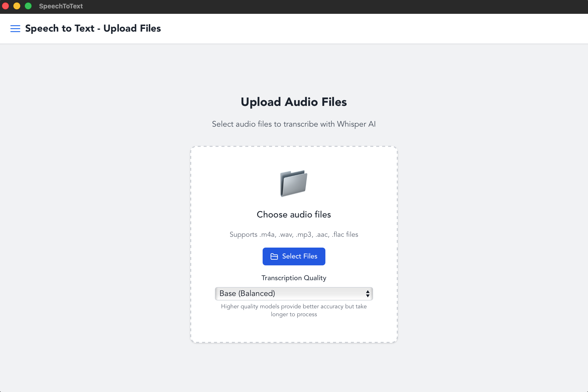
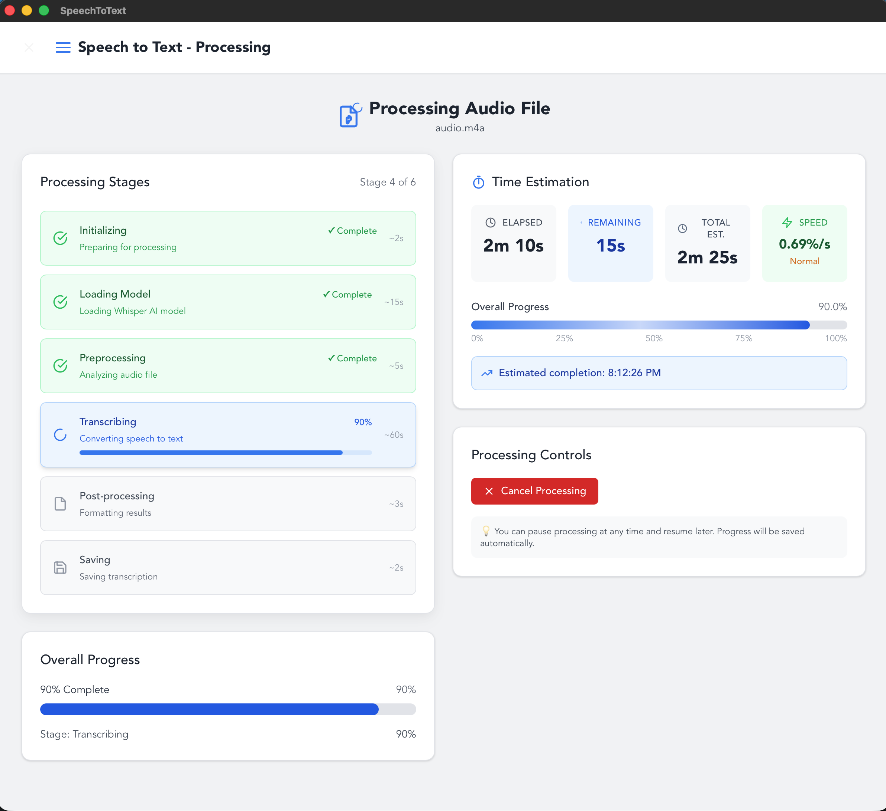

Speech To Text
동영상 파일의 음성을 텍스트로 변환하는 맥 앱입니다.
OpenAI의 Whisper API를 로컬에서 실행하여 동영상 파일의 음성을 텍스트로 변환합니다. 완전한 오프라인 동작으로 인터넷 연결 없이 사용 가능하며, 파일이 외부로 유출될 걱정이 없습니다.
간결한 UI로 파일을 선택하면 자동으로 변환이 시작되며, 변환된 텍스트를 클립보드로 복사하거나 파일로 저장할 수 있습니다. 강의 영상, 회의 녹화, 인터뷰 영상 등의 자막 제작이나 텍스트 추출에 안전하게 활용할 수 있는 생산성 도구입니다.
GitHub
